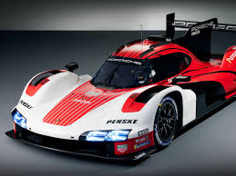
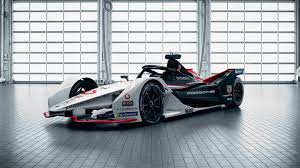
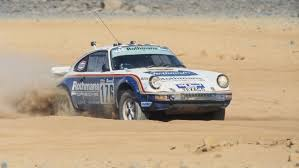
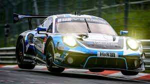

PORSCHE
Tecnologias
Porsche Traction Management
p style="text-align: left;"> Porsche Traction Management (PTM) es un sistema de tracción integral desarrollado por Porsche para mejorar la estabilidad, el rendimiento y la seguridad en sus vehículos. Este sistema inteligente distribuye de manera variable la potencia entre el eje delantero y el trasero, lo que permite una mayor tracción y control en diversas condiciones de conducción, como carreteras mojadas, nevadas o terrenos difíciles. El PTM se adapta de manera continua a las condiciones de la carretera y a los comportamientos del conductor. En condiciones normales, el sistema prioriza la tracción trasera para proporcionar una experiencia de conducción más deportiva y ágil, característica de los autos de Porsche. Sin embargo, cuando detecta una pérdida de tracción en alguno de los ejes, redirige automáticamente más potencia al eje que necesita más tracción, mejorando la estabilidad y el agarre. Este sistema es una de las características clave en modelos como el Porsche 911 Turbo, el Cayenne, el Panamera y el 718, brindando una conducción más segura y dinámica sin comprometer el rendimient
Porsche Dynamic Chassis Control
El Porsche Dynamic Chassis Control (PDCC) es un sistema avanzado de control de la suspensión activa que mejora la estabilidad, el confort y el manejo de los vehículos Porsche, especialmente en situaciones de conducción deportiva. Este sistema se utiliza en modelos como el Porsche Cayenne, el Panamera y el 911, entre otros. El PDCC trabaja a través de un sistema de barras estabilizadoras activas que ajustan la rigidez de las suspensiones de manera independiente en tiempo real. Su principal función es reducir el balanceo de la carrocería durante maniobras de alta velocidad, como al tomar curvas o al frenar de manera brusca. Esto se traduce en una mayor estabilidad y una experiencia de conducción más precisa y cómoda. En términos sencillos, el PDCC minimiza el "rolling" o la inclinación lateral del vehículo en las curvas, manteniendo las llantas lo más verticales posible para asegurar un mejor agarre y control. Además, puede ajustar la dureza de la suspensión para mejorar el confort en carreteras irregulares o adaptarse a diferentes estilos de conducción. El resultado es una mayor agilidad, precisión y confort, brindando al conductor una experiencia de manejo más dinámica y controlada, incluso en condiciones extremas.
Porsche Active Suspension Management
Porsche Active Suspension Management (PASM) es un sistema de suspensión adaptativa que ajusta la rigidez de las amortiguaciones en tiempo real para mejorar el confort y el rendimiento de conducción. Este sistema se encuentra disponible en muchos modelos de Porsche, como el 911, el Panamera, el Cayenne y el 718, y permite a los conductores elegir entre diferentes configuraciones según sus preferencias de conducción o las condiciones de la carretera. PASM funciona mediante un conjunto de amortiguadores electrónicos que pueden cambiar su firmeza de manera continua, adaptándose a las condiciones del terreno y al estilo de conducción. En modo normal, el sistema ofrece un equilibrio entre confort y estabilidad, asegurando una conducción suave y controlada. En modo deportivo o más agresivo, los amortiguadores se endurecen, lo que mejora el comportamiento en curvas y la respuesta de la dirección, brindando una sensación más dinámica y precisa.
Motorsport
24 horas de LE MANS
Una de las competiciones más emblemáticas en las que Porsche ha sobresalido es la 24 Horas de Le Mans, en la que ha logrado un impresionante récord de victorias. La marca ha ganado más de 19 veces en la categoría general, siendo el equipo más exitoso en la historia de esta mítica carrera. Modelos como el Porsche 917, 956 y 919 Hybrid se han destacado en esta competencia, demostrando la capacidad de Porsche para combinar velocidad, resistencia y fiabilidad. El Porsche 919 Hybrid, por ejemplo, ganó Le Mans en 2015, 2016 y 2017, lo que consolidó aún más la reputación de la marca en el automovilismo de resistencia.
Formula E
En la actualidad, Porsche también está presente en la Fórmula E, la serie de monoplazas eléctricos. Desde su debut en 2019, Porsche ha competido con su equipo Porsche Formula E Team y ha logrado buenos resultados, destacándose por su innovador enfoque en la tecnología eléctrica y el rendimiento de sus autos. Este paso hacia la movilidad eléctrica subraya el compromiso de Porsche con la sostenibilidad y la innovación, sin sacrificar el espíritu competitivo.
Campeonatos de Rally
Porsche también tiene una historia importante en el rally, especialmente con modelos como el Porsche 911. En los años 70 y 80, los vehículos de Porsche participaron con éxito en varios rallys, incluida la famosa Mille Miglia. Aunque la marca no está tan activa en el rally hoy en día como en otras disciplinas, su legado sigue vivo gracias a la resistencia y el rendimiento de sus autos en terrenos difíciles.
Campeonatos de Turismo
Además de las competiciones de resistencia y rally, Porsche ha sido un competidor clave en campeonatos de turismos y GT, como el Campeonato Mundial de Resistencia (WEC) y la Porsche Supercup, donde se destacan sus modelos como el Porsche 911 GT3 Cup. Estos autos se utilizan en carreras de alto nivel alrededor del mundo, demostrando las capacidades de los vehículos de producción de Porsche en el ambiente de carreras.
volver a inicio / Volver a primera pagina web / Ir a blog